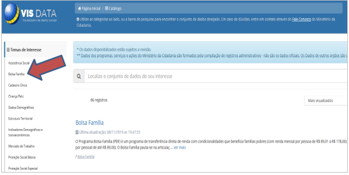
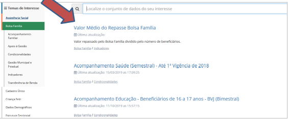
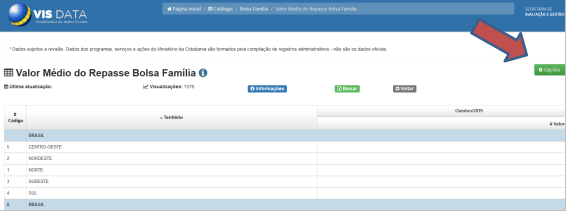
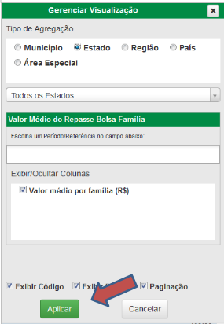

Valor médio do benefício pago por estado/UF¶
- Passo a passo:
Passo 1: Acesse https://aplicacoes.mds.gov.br/sagi/vis/data/home.php e a seguinte tela será exibida:¶

Passo 2: clique em “Catálogo”:¶

Passo 3: Clique na opção “Bolsa Família” no canto esquerdo, como mostra a imagem:¶

Passo 4: Localize o conjunto de dados desejado, e em seguida clique em “Valor Médio do Repasse Bolsa Família”¶

Passo 5: clique em “Opções”:¶

Passo 6: Dentro de opções, um gerenciador será aberto para a escolha da agregação desejada, e em seguida clique em “Aplicar:”¶
